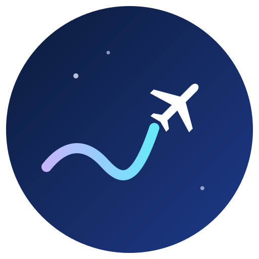

Pase por vuelo
Bs 10 por vuelo
Acceso completo durante un viaje.

Sin conexión: AeroMind sigue funcionando.
Música, respiración y una guía sencilla de tu vuelo. Todo funciona sin internet.
En iPhone: toca Compartir y luego “Agregar a inicio”.
Prototipo escolar · Proyecto de Emprendimiento 2026. No cobra y no guarda datos personales.
Toca cada fase para saber qué pasa y qué es normal sentir u oír.
Información general y sencilla. Sigue siempre las instrucciones de la tripulación.
Respirar despacio ayuda a sentir más calma. Elige un ejercicio y sigue el círculo.
Cuando quieras, empieza
Sirve para volver al presente cuando los nervios suben.
Nombra 5 cosas que puedes ver.
Estos ejercicios no reemplazan la ayuda de un profesional de la salud. Si tu miedo es muy intenso, busca apoyo profesional.
Sonidos relajantes que crea la propia app: no necesitan internet ni usan canciones con derechos de autor.
Usa audífonos. Si no escuchas nada, sube el volumen o revisa el modo silencio del celular.
AeroMind es un emprendimiento simulado: estos precios se usan en el plan económico y la app no cobra nada.
Bs 10 por vuelo
Acceso completo durante un viaje.
Bs 15 al mes
Música relajante y ejercicios básicos.
Bs 30 al mes
Todo lo anterior, más contenido personalizado y más ejercicios.
Bs 3.000 al mes
AeroMind para todos los pasajeros de la aerolínea.
Simulación escolar: no hay pagos, registros ni datos personales.